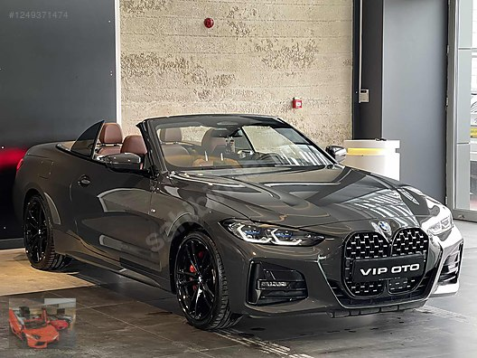

BMW (Bayerische Motoren Werke), 1913 yılında Almanya'nın Münih kentinde kurulan ve günümüzde dünyanın önde gelen lüks otomobil ve motosiklet üreticilerinden biri olan markadır. İsim Anlamı: BMW'nin açılımı Bayerische Motoren Werke (Bavyera Motor Fabrikaları) şeklindedir. Kuruluş: Şirket ilk olarak uçak motoru üretmek amacıyla kurulmuş, otomobil üretimine ise 1928 yılında geçmiştir. Slogan: Markanın dünyaca ünlü resmi sloganı "Sheer Driving Pleasure" (Gerçek Sürüş Keyfi) olarak bilinir. Logo: Mavi ve beyaz renklerden oluşan amblemin, Bavyera eyaletinin renklerini temsil ettiği veya şirketin havacılık geçmişine atıfla bir uçak pervanesini simgelediği kabul edilir. Öne Çıkan Modeller ve Seriler BMW, araçlarını genellikle kullanım amacına ve boyutuna göre serilere ayırır: Binek Modeller: 1 Serisi'nden 8 Serisi'ne kadar uzanan sedan, coupe ve hatchback modelleri mevcuttur. X Serisi: BMW'nin "SAV" (Sports Activity Vehicle) olarak adlandırdığı SUV modellerini kapsar. M Serisi: BMW M (Motorsport) departmanı tarafından geliştirilen yüksek performanslı spor araçlardır. i Serisi: Markanın tamamen elektrikli ve hibrit teknolojisine sahip modellerini temsil eder. Motorrad: BMW'nin motosiklet üretim birimidir. Güncel Durum ve Teknoloji Üretim: Almanya'nın Dingolfing şehri, BMW'nin en büyük üretim tesislerinden birine ev sahipliği yapar. Türkiye Distribütörü: Türkiye'deki faaliyetleri Borusan Otomotiv tarafından yürütülmektedir. En Güçlü Model: Teknik verilere göre BMW M5 CS, markanın tarihindeki en güçlü seri üretim otomobillerinden biri olarak kabul edilir. Dijital Hizmetler: BMW ConnectedDrive üzerinden araç sahiplerine dijital bağlantı ve akıllı servis çözümleri sunulmaktadır.
Temel Tasarım ve Gövde Tipleri İki Kapılı Form: Standart Coupe modeli iki kapılıdır ve arkaya doğru alçalan tavan çizgisiyle (fastback) sportif bir görünüm sunar. Gövde Kodları: İlk nesil F32, 2020 sonrası üretilen ikinci nesil ise G22 kasa koduyla anılır. İkonik Ön Izgara: İkinci nesil (G22) ile gelen dikey ve büyük "böbrek" ızgaralar, modelin en çok konuşulan ve onu 3 Serisi'nden ayıran en belirgin tasarım özelliğidir.
Performans ve Motor Seçenekleri Türkiye pazarında ve küresel ölçekte en yaygın seçenekler şunlardır: BMW 420i: Genellikle 1.6 litrelik (Türkiye'ye özel) veya 2.0 litrelik turbo benzinli motorla sunulur. Yaklaşık 170-184 bg güç üretir.
Model:4.20 İ Coupe BMW M Sport